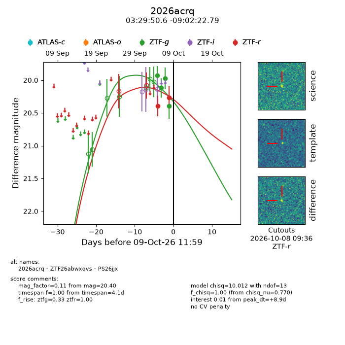
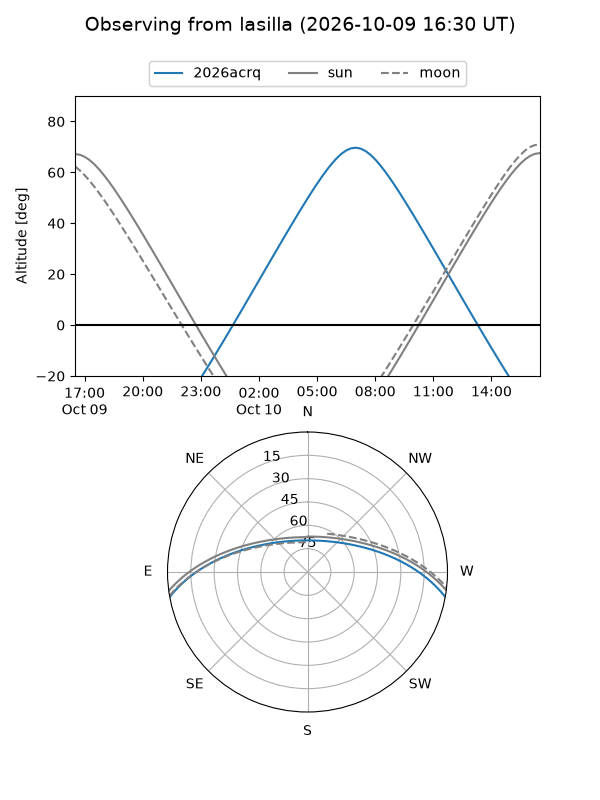
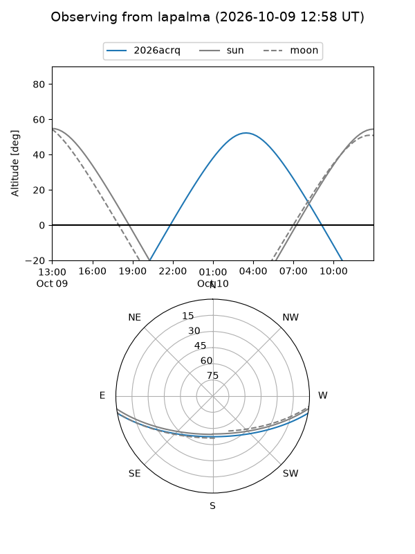
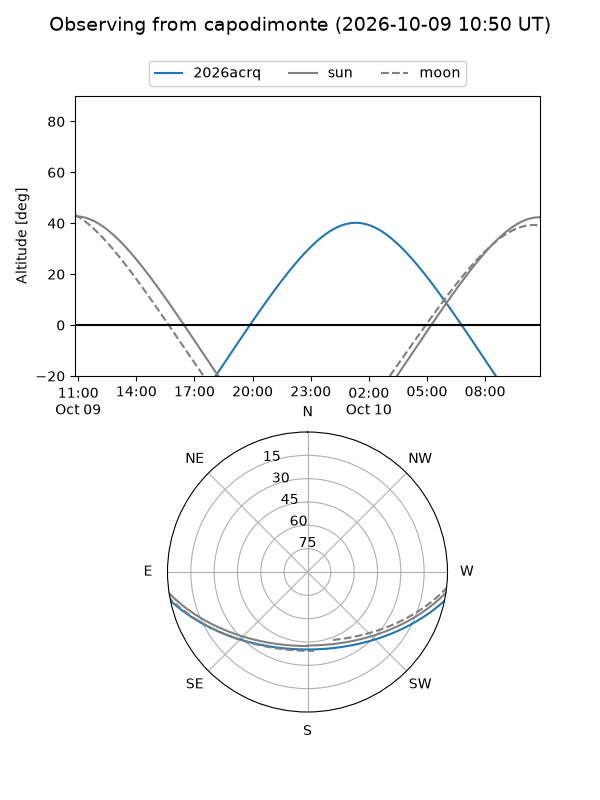
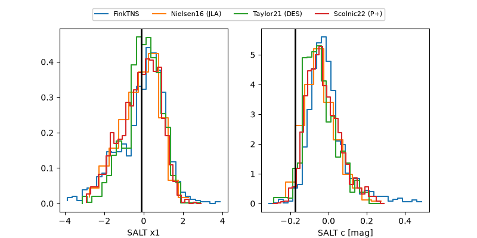

2026acrq
Target 2026acrq at 2026-10-09 12:01
Aliases and brokers:
FINK-ZTF: ztf.fink-portal.org/ZTF26abwxqvs
Lasair-ZTF: lasair-ztf.lsst.ac.uk/objects/ZTF26abwxqvs
ALeRCE-ZTF: alerce.online/object/ZTF26abwxqvs
YSE-PZ: ziggy.ucolick.org/yse/transient_detail/2026acrq
TNS name: wis-tns.org/object/2026acrq
Direct TNS query: direct search
alt names
ZTF26abwxqvs (ztf,fink_ztf)
2026acrq (tns,yse)
PS26jjx (panstarrs)
Coordinates:
equatorial (ra, dec) = 52.4609,-9.03966
equatorial (HMS+DMS) = 03:29:50.62,-09:02:22.79
galactic (l, b) = (194.7188,-48.49172)
Flags:
peak dt: +8.9
Photometry:
last ztfg=20.40, ztfr=20.26
4 ztfg, 2 ztfr detections
Lightcurve

Visibility



Additional plots
